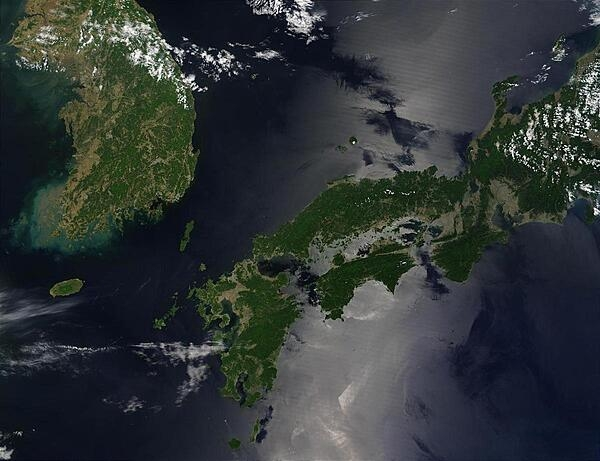

Asia
Area comparative
slightly larger than Virginia; slightly smaller than Mississippi
1,607 km
12 nm
coal, iron ore, limestone, magnesite, graphite, copper, zinc, lead, precious
metals, hydropower
26,298,666
12,828,269
13,470,397 (2024 est.)
female 54; male 56; total 56
Nationality
Korean(s)
LanguagesKorean
traditionally Buddhist and Confucian, some Christian and syncretic Chondogyo (Religion of the
Heavenly Way)
